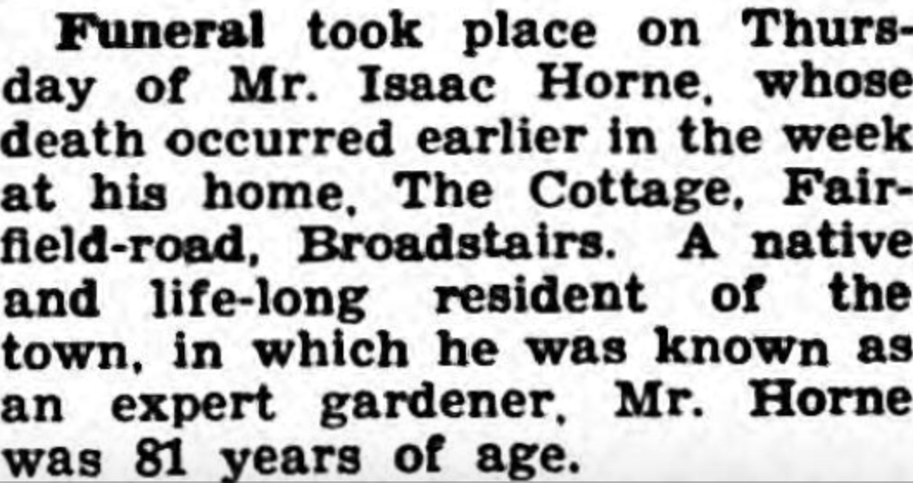
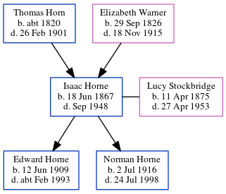

Isaac Horne 1867 - 1948
[ Home ] | [ Calendar ] | [ Surnames Index ] | [ Errors ] | [ Family History ]A gardener domestic servant and the child of Thomas Horn (a farm bailiff) and Elizabeth Warner (a general shopkeeper), Isaac Horne, the great-great-uncle of Nigel Horne, was born in St Peters, Thanet, Kent, England on 18 Jun 18671,2,3,4,5,6,7,8 and married Lucy Stockbridge (a dressmaker with whom he had 2 children: Edward John and Norman George) at Cavendish Baptist Church, Cavendish Street, Ramsgate, Kent, England on 1 Jun 19079.
During his life, he was living at Northdown, Margate, Kent on 2 Apr 187111; at Buddles Farm, Dane Court Road, St Peters, Thanet, Kent on 3 Apr 188113; at 194 Reading Street, St Peters, Thanet, Kent on 5 Apr 189112 - less than a mile from his mother Elizabeth Warner who was living at 194 Reading Street, St Peters, Thanet, Kent; at 1 Welbeck Terrace, Reading Street, St Peters, Thanet, Kent on 31 Mar 19014 (the same place as his father had been living in 1895) - less than a mile from his mother Elizabeth Warner who was living at 1 Welbeck Terrace, Reading Street, St Peters, Thanet, Kent; at 23 Victoria Avenue, Northdown, Margate, Kent on 2 Apr 191110; at Rose Cottage, Fairfield, Thanet, Kent on 19 Jun 192114; and at The Cottage, Fairfield Road, St Peters, Thanet, Kent on 29 Sept 19396 and in 1948 which is where he died in Sep 19487.
Parents
- Thomas was born c. 1820
- Elizabeth Ann was born on 29 Sept 1826
Children
- Edward John was born on 12 Jun 1909
- Norman George was born on 2 Jul 1916
Citations
- 1871 England Census Online publication - Provo, UT, USA: The Generations Network, Inc., 2004.Original data - Census Returns of England and Wales, 1871. Kew, Surrey, England: The National Archives of the UK (TNA): Public Record Office (PRO), 1871. Data imaged from the National
- 1881 England Census Online publication - Provo, UT, USA: The Generations Network, Inc., 2004. 1881 British Isles Census Index provided by The Church of Jesus Christ of Latter-day Saints © Copyright 1999 Intellectual Reserve, Inc. All rights reserved. All use is subject to the
- 1891 England Census Online publication - Provo, UT, USA: The Generations Network, Inc., 2005.Original data - Census Returns of England and Wales, 1891. Kew, Surrey, England: The National Archives of the UK (TNA): Public Record Office (PRO), 1891. Data imaged from The National
- 1901 England Census Online publication - Provo, UT, USA: The Generations Network, Inc., 2005.Original data - Census Returns of England and Wales, 1901. Kew, Surrey, England: The National Archives of the UK (TNA): Public Record Office (PRO), 1901. Data imaged from the National
- 1911 England Census Online publication - Provo, UT, USA: Ancestry.com Operations, Inc., 2011.Original data - Census Returns of England and Wales, 1911. Kew, Surrey, England: The National Archives of the UK (TNA), 1911. Data imaged from the National Archives, London, England.
- 1939 Register - Findmypast (was recorded at this address)
- England & Wales, Death Index: 1984-2005 Online publication - Provo, UT, USA: The Generations Network, Inc., 2007.Original data - General Register Office. England and Wales Civil Registration Indexes. London, England: General Register Office. © Crown copyright. Published by permission of the Cont
- England & Wales, FreeBMD Birth Index, 1837-1915 Online publication - Provo, UT, USA: The Generations Network, Inc., 2006.Original data - General Register Office. England and Wales Civil Registration Indexes. London, England: General Register Office. © Crown copyright. Published by permission of the Cont
- 1911 England Census Online publication - Provo, UT, USA: Ancestry.com Operations, Inc., 2011.Original data - Census Returns of England and Wales, 1911. Kew, Surrey, England: The National Archives of the UK (TNA), 1911. Data imaged from the National Archives, London, England.
- 1911 Census for England & Wales - Findmypast (was age 43 and the head of the household)
- 1871 England, Wales & Scotland Census - Findmypast (was age 3 and the son of the head of the household)
- 1891 England, Wales & Scotland Census - Findmypast (was age 23 and the son of the head of the household)
- 1881 England, Wales & Scotland Census - Findmypast (was age 12 and the son of the head of the household)
- 1921 Census Of England & Wales - Findmypast (was age 54 and the head of the household)
Media
Isaac Horne - Lucy Stockbridge - marriage

Thanet Advertiser 21 Sep 1948

1939 Register Transcription - TNA-R39-1685-1685I-018-13
England & Wales births 1837-2006 - BMD/B/1867/3/AZ/000314/077
England & Wales marriages 1837-2008 - BMD/M/1907/2/AZ/000184/062
1911 Census for England & Wales - GBC/1911/RG14/04509/0275/1
1871 England, Wales & Scotland Census - GBC/1871/0014275869
1891 England, Wales & Scotland Census - GBC/1891/0005914775
England & Wales deaths 1837-2007 - BMD/D/1948/3/AZ/000391/045
Family Tree
Map
Generated by ged2site. Last updated on Jul 3, 2024
Known Issues
Surname is different from both parents
Residence record for 1948 contains no citation
May have been living with mother on 31 Mar 1901, but the addresses don't match or aren't detailed enough to be sure
Listed in the residence for 1948, but spouse Lucy Stockbridge is not